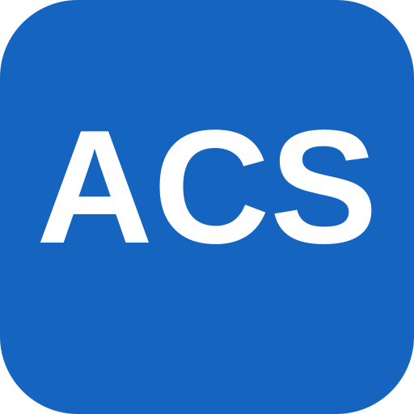
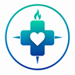

Guia Saúde
Os sistemas da Atenção Primária de São Mateus do Sul, num lugar só. Escolha por onde entrar.
Sistemas
Planifica Fácil
O acompanhamento de cada paciente da unidade: consultas, visitas, rastreios e as linhas de cuidado.
Equipe da unidade Abrir planifica.guiaaps.com.br
SIGSS
O sistema da Secretaria: cadastro do usuário, agenda, atendimento e o registro das visitas das agentes.
Toda a equipe Abrir c3102prd.cloudmv.com.br
AvaliaACSO lançamento das visitas das agentes comunitárias e a avaliação mensal do desempenho.
Enfermeiros e coordenação Abrir avalia-acs.web.app
Guia Clínico APSO sistema que guia a consulta em diversas situações de saúde: o que perguntar, o que avaliar e o que fazer em cada caso.
Enfermeiros e médicos Abrir guiaclinicoaps.github.io